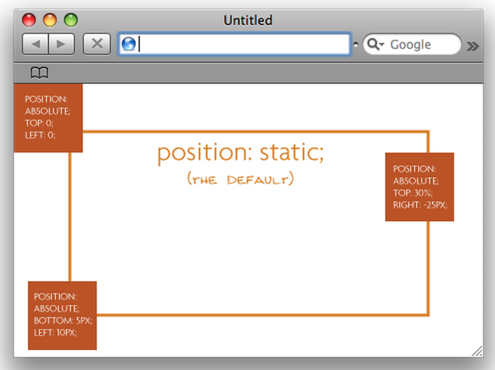
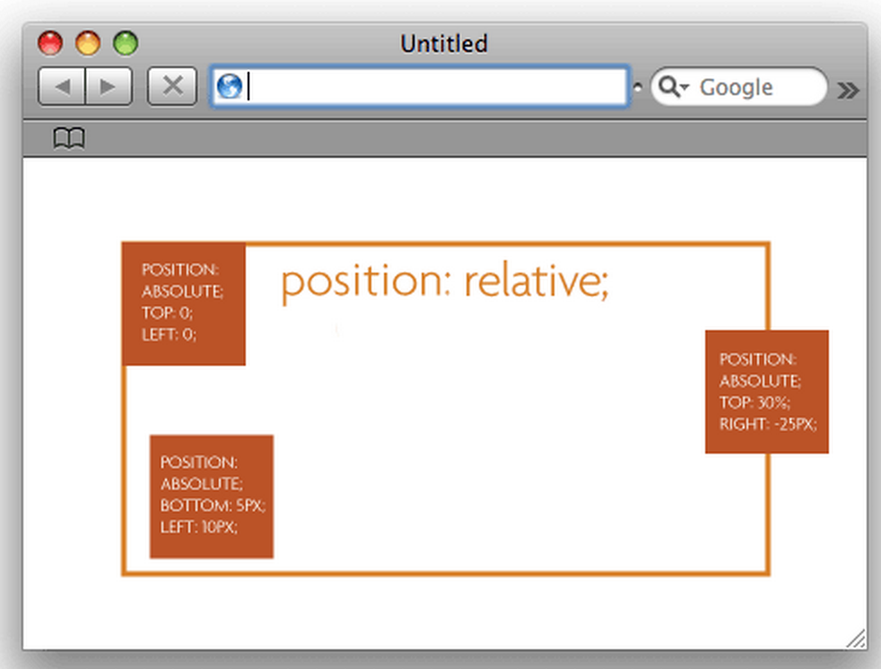

| RAFAEL AURIEMO |  |
 |
 |
Dev Bootcamp Blog
Positioning in CSS
Jan. 28, 2015
Positioning refers to how an element on a website will be positioned within the page. By default this property will be set to static which just means it is displayed normally, without alteration.
There are also there other types of positioning: absolute, fixed, and relative.Fixed means that the positioning of that element is fixed relative to the user's viewpoint. Effectively this means that as you scroll through the rest of the webpage this element will remain static.
Relative simply means "relative to itself" or relative to its normal position. Just setting the property to relative won't do anything however untill you add a property such as top: 20% to shift it down 20% from where it is originally displayed. It is also important when used in combination with absolute positioning.
By using the attributes top, bottom, left and right absolute positioning allows you to choose exactly where to place the element. These property values will be relative to the parent element; if there is none it will default up to the html page itself. You can use relative parent elements as ways to anchor child absolute elements so that they do not become relative to the page itself.
Below you will see 3 absolutely positioned blocks when their parent is a relatively positioned block vs. when their parent is static.
 